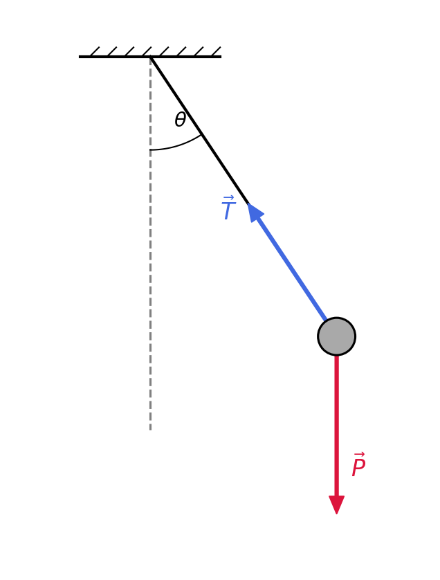
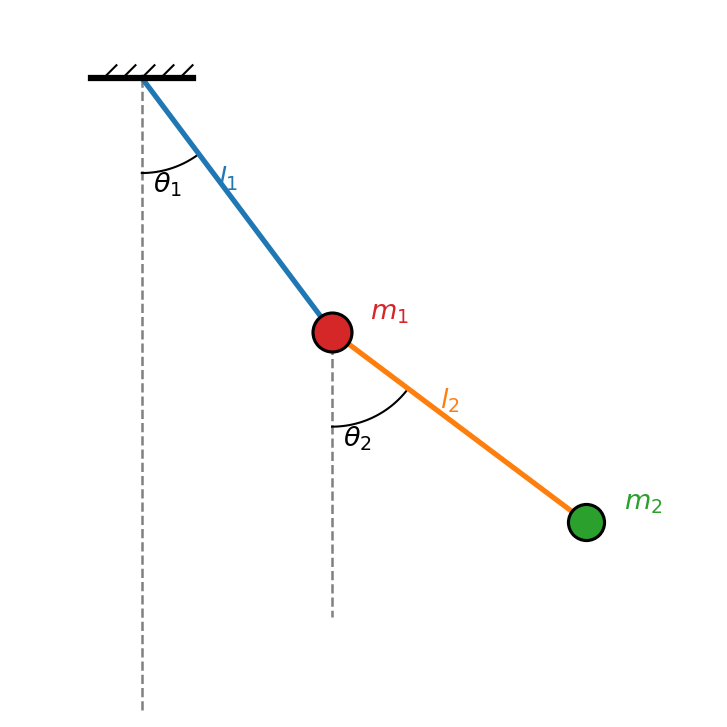

Introduction
La mécanique newtonienne constitue l'un des cadres fondamentaux de la physique classique. Elle décrit le mouvement des systèmes matériels à partir de leurs propriétés cinématiques et des interactions auxquelles ils sont soumis.
Nous allons progressivement passer d'une description newtonienne à une formulation fondée sur les coordonnées généralisées, le principe de moindre action et les équations d'Euler-Lagrange. Cette première étape rappelle les notions essentielles et met en évidence les difficultés qui apparaissent lorsque le nombre de degrés de liberté augmente.
- Rappeler la cinématique et les lois de Newton.
- Introduire travail, puissance et énergie.
- Distinguer coordonnées indépendantes et contraintes.
- Étudier le pendule simple puis le double pendule.
- Motiver la mécanique analytique.
Cinématique newtonienne
Position vitesse et accélération
Dans un référentiel donné, la position d'un point matériel est décrite par le vecteur position. La vitesse est sa dérivée temporelle et l'accélération est la dérivée de la vitesse :
En coordonnées cartésiennes, les vecteurs de base sont constants :
Coordonnées polaires
Pour un mouvement plan, les coordonnées polaires sont souvent plus naturelles. Les vecteurs unitaires dépendent eux-mêmes de l'angle :
Dynamique et forces usuelles
Quantité de mouvement et lois de Newton
La quantité de mouvement d'un point matériel de masse constante est définie par \(\vec p=m\vec v\). Dans un référentiel inertiel, les trois lois de Newton sont :
- Principe d'inertie. Un corps isolé reste au repos ou en mouvement rectiligne uniforme.
- Principe fondamental de la dynamique. La résultante des forces est la dérivée temporelle de la quantité de mouvement.
- Principe des actions réciproques. Deux corps en interaction exercent l'un sur l'autre des forces de même intensité et de directions opposées.
Forces usuelles
Au voisinage de la Terre, le poids d'un corps de masse m est \(\vec P=m\vec g\), avec \(g\simeq9{,}81\,\mathrm{m\,s^{-2}}\). Dans un repère vertical orienté vers le haut, \(\vec P=-mg\vec e_z\).
Une surface peut exercer une réaction normale, qui est une force de contrainte. Dans un modèle simple de frottement dynamique, l'intensité vaut \(F_f=\mu N\) ; le frottement est dissipatif. Pour un ressort idéal de raideur k, la force de rappel est :
Travail puissance et énergie
Travail et puissance
Le travail élémentaire d'une force lors d'un déplacement infinitésimal est son produit scalaire avec ce déplacement. Entre deux points, le travail dépend en général du chemin suivi.
Forces conservatives et énergie potentielle
Une force est conservative lorsque son travail entre deux points ne dépend que des positions initiale et finale. Le travail sur un chemin fermé est alors nul et il existe une énergie potentielle U :
Pour la pesanteur, on peut choisir \(U(z)=mgz+C\). Pour un ressort idéal, l'énergie potentielle est \(U(x)=\frac12kx^2+C\).
Théorème de l'énergie cinétique
En utilisant la deuxième loi de Newton et \(d\vec r=\vec vdt\), le travail total s'écrit :
On définit donc l'énergie cinétique par \(K=\frac12mv^2\) et l'on obtient \(\Delta K=W_{\mathrm{total}}\). Si toutes les forces sont conservatives, \(\Delta K=-\Delta U\), d'où :
Degrés de liberté et contraintes
Décrire une particule libre dans le plan demande deux coordonnées cartésiennes. Si elle est contrainte à rester sur un cercle de rayon l, la relation géométrique suivante rend ces coordonnées dépendantes :
On peut alors choisir un seul angle : \(x=l\sin\theta\), \(y=-l\cos\theta\). Le nombre de degrés de liberté est le nombre de coordonnées indépendantes nécessaires pour déterminer la configuration. Ces coordonnées seront notées \(q_1,q_2,\ldots,q_N\) et appelées coordonnées généralisées.
Application Le pendule simple
Description et bilan des forces
Le pendule simple est une masse ponctuelle m suspendue à un fil inextensible, sans masse, de longueur l. Le point de suspension est fixe et le mouvement se déroule dans un plan vertical. La configuration est décrite par un seul angle : le système a un degré de liberté.

Équation du mouvement
La longueur est constante : r=l, donc la vitesse radiale et l'accélération radiale associée sont nulles. L'accélération devient
La projection de la deuxième loi de Newton sur la direction tangentielle élimine la tension :
L'équation est non linéaire. La tension agit dans la direction radiale et impose principalement la contrainte géométrique.
Petites oscillations et énergie
Lorsque l'amplitude est petite, \(\sin\theta\simeq\theta\). L'équation devient celle d'un oscillateur harmonique :
Sans frottements, l'énergie mécanique est conservée :
Du pendule simple au double pendule
Le double pendule comporte deux masses ponctuelles, deux segments rigides de longueurs \(l_1,l_2\) et deux angles \(\theta_1,\theta_2\). Il possède donc deux degrés de liberté.

Le dernier terme met en évidence le couplage entre les degrés de liberté. Avec Newton, il faut déterminer les forces de contrainte, écrire les équations vectorielles, projeter sur des directions adaptées puis éliminer les tensions. Les lois restent valables, mais l'organisation du calcul devient laborieuse.
| Pendule simple | Double pendule | |
|---|---|---|
| Degrés de liberté | 1 | 2 |
| Coordonnées naturelles | θ | θ₁, θ₂ |
| Équations | Une équation | Deux équations couplées |
| Description newtonienne | Simple | Rapidement laborieuse |
Vers la mécanique analytique
La question centrale est la suivante : comment obtenir directement les équations du mouvement à partir des coordonnées indépendantes, sans déterminer explicitement toutes les forces de contrainte ?
La formulation analytique incorpore les contraintes géométriques dans le choix des coordonnées et construit les équations à partir d'une quantité scalaire fondée sur les énergies :
Exercices
- Chute libre. Un objet de masse 2 kg est lâché sans vitesse initiale d'une hauteur de 10 m. Déterminer sa vitesse et son énergie cinétique à l'impact, puis vérifier le théorème de l'énergie cinétique.
- Plan incliné. Un bloc de masse 5 kg glisse sur un plan d'angle 30°, avec un coefficient de frottement dynamique de 0,2. Déterminer la réaction normale, le frottement, l'accélération et la vitesse après 3 s.
- Ressort. Un ressort de raideur 100 N m⁻¹ est comprimé de 0,10 m. Déterminer son énergie potentielle et la vitesse d'une masse de 0,5 kg au retour à la longueur naturelle.
- Pendule simple. Pour une longueur de 1 m et un angle initial de 20°, écrire l'équation exacte, l'approximation des petites oscillations, la période et l'énergie mécanique.
- Degrés de liberté. Les déterminer pour une particule libre dans l'espace, une particule sur un cercle, un pendule simple et un double pendule plan.
- Double pendule. Établir les coordonnées des masses, calculer leurs vitesses et expliquer l'origine du couplage.
À retenir
- Les lois de Newton relient forces et accélérations.
- Pour une force conservative, \(\vec F=-\nabla U\), et l'énergie mécanique est conservée en l'absence de dissipation.
- Les contraintes réduisent le nombre de coordonnées indépendantes.
- Les coordonnées généralisées décrivent directement la configuration utile du système.
- La mécanique analytique fournit une méthode systématique pour les systèmes contraints et couplés.